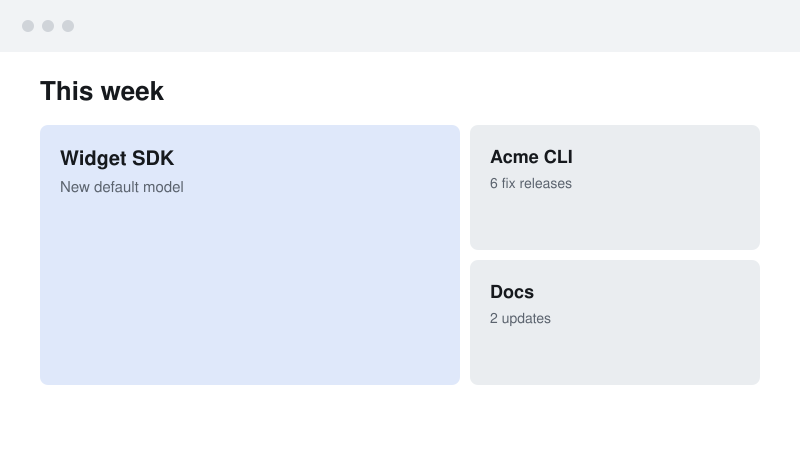

<title>Build Story Template</title>
<!--
  Build story page template.
  Copy to <work-dir>/post.html, replace the example content, delete components you don't use.
  Components: masthead + stats · lede · contents · chapter · ref · margin note · finding · heard→changed ·
  keyed figure · shot · command line · timeline · module slot · notes · further reading · colophon, plus the rendered ones: options · steps · flow ·
  code · term · strip · bars (and delta, line, matrix and shader, a WebGL figure, not shown here).
  Rendered components come from small specs: write one in <work-dir>/viz/, point a marker comment at it
  ("viz kind viz/name.json" … "/viz", as below), and run scripts/viz.mjs build post.html.
  The markers below point at the skill's example specs (specs/…); replace them. Every kind, with its
  spec, is previewed in assets/components.html. Specs: references/visuals.md#components.
  Two styles share this markup. Plain is the default. For field notes, set data-style="field-notes" on
  the article and render the viz markers again (flows get hand-drawn strokes). Restyle by editing the
  tokens only: a brand changes the Plain block. Keep the light/dark structure.
  Colour roles: --accent fills and the series that matters, --mark highlights and commentary (never
  a fill), --landmark a landmark or star, --dim the data that isn't the point.
-->
<link rel="preconnect" href="https://fonts.googleapis.com">
<link rel="preconnect" href="https://fonts.gstatic.com" crossorigin>
<!-- Both styles' fonts. A browser downloads only the files a page uses. -->
<link rel="stylesheet" href="https://fonts.googleapis.com/css2?family=Archivo:wdth,wght@62..125,400..800&family=IBM+Plex+Mono:wght@400;500&family=Martian+Mono:wdth,wght@75..112.5,300..500&family=Newsreader:ital,opsz,wght@0,6..72,400;0,6..72,500;0,6..72,600;1,6..72,400&family=Shantell+Sans:wght@300..600&family=Source+Serif+4:ital,opsz,wght@0,8..60,400;0,8..60,600;1,8..60,400&display=swap">
<style>
/* Layout: one reading column (~40rem) with figures that may break out to ~54rem; chapter numbers hang in the left margin from 48rem. */
/* Plain: white paper, a grotesque for headings and labels, a reading serif, figures on plain ground between two rules. */
:root {
  --paper: #ffffff;
  --ink: #161616;
  --muted: #616161;
  --rule: #e4e4e4;
  --wash: #f2f2f2;
  --accent: #3358d4; /* fills, boxes, the lit part, the series that matters */
  --accent-wash: #e8edfb;
  --mark: #df004e; /* highlights and commentary: chapter numbers, footnotes, partial marks; #ff3264 deepened for 4.5:1 on paper. Never a fill. */
  --landmark: #f2b81c; /* a landmark or star on a chart; never text */
  --dim: #b3b3b3; /* de-emphasised data marks (the series that isn't the point) */
  --card: #f7f7f7; /* code and terminal blocks */
  --card-shadow: 0 0 0 1px rgb(0 0 0 / 0.05);
  --plate: var(--paper); /* the ground under a flow, steps or diagram */
  --font-display: "Archivo", "Helvetica Neue", Arial, sans-serif;
  --font-body: "Newsreader", Georgia, "Times New Roman", serif;
  --font-mono: "IBM Plex Mono", ui-monospace, SFMono-Regular, Menlo, monospace;
  --font-label: var(--font-display); /* kickers, chapter numbers, tags */
  --font-code: var(--font-mono); /* code and terminal blocks */
  --font-note: var(--font-display); /* margin notes */
  --note: var(--muted); /* margin-note colour */
  --highlight: none; /* the finding's highlighter */
  --label-stretch: 80%;
  --display-weight: 800;
  --display-stretch: 86%;
  --heading-weight: 700;
  --body-size: 1.125rem;
  --col: 40rem;
  --wide: 54rem;
}
@media (prefers-color-scheme: dark) {
  :root:not([data-theme="light"]) {
    --paper: #131415; --ink: #ececea; --muted: #9c9c99; --rule: #2a2b2d; --wash: #1c1d1f;
    --accent: #8aa6f5; --accent-wash: #1c2440; --mark: #ff3264; --dim: #55585d; --card: #1a1b1d; --card-shadow: 0 0 0 1px rgb(255 255 255 / 0.07); color-scheme: dark;
  }
}
:root[data-theme="dark"] {
  --paper: #131415; --ink: #ececea; --muted: #9c9c99; --rule: #2a2b2d; --wash: #1c1d1f;
  --accent: #8aa6f5; --accent-wash: #1c2440; --mark: #ff3264; --dim: #55585d; --card: #1a1b1d; --card-shadow: 0 0 0 1px rgb(255 255 255 / 0.07); color-scheme: dark;
}
/* Field notes: off-white paper, a serif throughout, mono labels, figures on a dot grid, drawn strokes. */
:root:has(.post[data-style="field-notes"]) {
  --paper: #fcfcfa; --ink: #1f1f1d; --muted: #64645f; --rule: #e3e3dd; --wash: #f1f1ec;
  --accent: #3358d4; --accent-wash: #e7ebf7; --mark: #df004e; --dim: #c4c4bd; --card: #f5f5f1; --card-shadow: 0 0 0 1px rgb(31 31 29 / 0.08);
  --plate: radial-gradient(circle, var(--dot) 0.9px, transparent 1.2px) 0 0 / 16px 16px, var(--paper);
  --dot: #d8d8d1;
  --font-display: "Source Serif 4", Georgia, "Times New Roman", serif;
  --font-body: "Source Serif 4", Georgia, "Times New Roman", serif;
  --font-mono: "Martian Mono", ui-monospace, SFMono-Regular, Menlo, monospace;
  --font-label: var(--font-mono);
  --font-code: "IBM Plex Mono", ui-monospace, SFMono-Regular, Menlo, monospace; /* Martian is too wide for a code line */
  --font-note: "Shantell Sans", "Comic Neue", cursive; /* margin notes and annotations only */
  --note: var(--accent); /* written in pen */
  --highlight: linear-gradient(transparent 60%, color-mix(in oklab, var(--mark) 24%, transparent) 60% 92%, transparent 92%);
  --label-stretch: 87.5%;
  --display-weight: 600;
  --display-stretch: 100%;
  --heading-weight: 600;
  --body-size: 1.0625rem;
}
@media (prefers-color-scheme: dark) {
  :root:not([data-theme="light"]):has(.post[data-style="field-notes"]) {
    --paper: #18181a; --ink: #ebe8e1; --muted: #9d9a92; --rule: #2d2c2a; --wash: #222220;
    --accent: #8aa6f5; --accent-wash: #1f2638; --mark: #ff3264; --dim: #55534d; --card: #1f1f1e; --card-shadow: 0 0 0 1px rgb(255 255 255 / 0.07); --dot: #3a3934;
    --highlight: linear-gradient(transparent 60%, color-mix(in oklab, var(--mark) 40%, transparent) 60% 92%, transparent 92%);
  }
}
:root[data-theme="dark"]:has(.post[data-style="field-notes"]) {
  --paper: #18181a; --ink: #ebe8e1; --muted: #9d9a92; --rule: #2d2c2a; --wash: #222220;
  --accent: #8aa6f5; --accent-wash: #1f2638; --mark: #ff3264; --dim: #55534d; --card: #1f1f1e; --card-shadow: 0 0 0 1px rgb(255 255 255 / 0.07); --dot: #3a3934;
    --highlight: linear-gradient(transparent 60%, color-mix(in oklab, var(--mark) 40%, transparent) 60% 92%, transparent 92%);
}

* { box-sizing: border-box; }
body {
  background: var(--paper); color: var(--ink);
  font: 400 var(--body-size)/1.65 var(--font-body);
  padding-inline: 16px; padding-block: 3rem 5rem;
  -webkit-font-smoothing: antialiased;
}
.post { max-width: var(--wide); margin-inline: auto; display: grid; gap: 1.5rem; }
.post > * { width: 100%; max-width: var(--col); margin-inline: auto; min-width: 0; }
.post > .wide, .ch > .wide { max-width: var(--wide); }
a { color: var(--accent); text-underline-offset: 0.18em; text-decoration-thickness: 1px; }
a:focus-visible, button:focus-visible { outline: 2px solid var(--accent); outline-offset: 2px; border-radius: 2px; }
p { margin: 0; }
code, pre, kbd, samp { font-variant-ligatures: none; font-feature-settings: "liga" 0, "calt" 0; }
code { font: 0.86em/1.5 var(--font-code); background: var(--wash); padding: 0.1em 0.3em; border-radius: 3px; }
em { font-style: italic; }

/* ── masthead ───────────────────────────────────────── */
.mast { display: grid; gap: 0.9rem; padding-bottom: 1.25rem; border-bottom: 1px solid var(--rule); }
.kicker, .byline, .stats dt, .label, .toc, .n, .tag, .end h2 {
  font-family: var(--font-mono); font-size: 0.75rem; letter-spacing: 0.04em; color: var(--muted);
}
.kicker, .stats dt, .n, .tag, .end h2 { font-family: var(--font-label); font-stretch: var(--label-stretch); font-weight: 600; }
.kicker { text-transform: uppercase; letter-spacing: 0.08em; }
h1 {
  font: var(--display-weight) clamp(2rem, 5vw, 3rem)/1.06 var(--font-display); font-stretch: var(--display-stretch); letter-spacing: -0.02em; margin: 0; text-wrap: balance;
}
.dek { font-size: 1.25rem; line-height: 1.45; color: color-mix(in oklab, var(--ink) 78%, var(--paper)); text-wrap: pretty; }
.stats { display: flex; flex-wrap: wrap; gap: 0.5rem 1.75rem; margin: 0.35rem 0 0; }
.stats div { display: grid; gap: 0.1rem; }
.stats dt { text-transform: uppercase; letter-spacing: 0.08em; font-size: 0.6875rem; }
.stats dd { margin: 0; font: var(--heading-weight) 1.25rem/1.2 var(--font-display); font-variant-numeric: tabular-nums; }

.lede { font-size: 1.125rem; }

/* ── contents ───────────────────────────────────────── */
.toc ol { list-style: none; margin: 0; padding: 0; display: grid; grid-template-columns: repeat(auto-fill, minmax(15rem, 1fr)); gap: 0.25rem 1.5rem; }
.toc a { color: var(--ink); text-decoration: none; display: flex; gap: 0.75rem; padding: 0.2rem 0; }
.toc a span { color: var(--muted); }
.toc a:hover { color: var(--accent); }

/* ── chapters ───────────────────────────────────────── */
.ch { display: grid; gap: 1.1rem; padding-top: 2rem; border-top: 1px solid var(--rule); max-width: var(--wide) !important; }
.ch > * { width: 100%; max-width: var(--col); margin-inline: auto; min-width: 0; }
.ch h2 {
  font: var(--heading-weight) 1.5rem/1.2 var(--font-display); letter-spacing: -0.01em; margin-block: 0; text-wrap: balance;
  display: flex; flex-direction: column; gap: 0.3rem;
}
.ch h3 { font: var(--heading-weight) 1.0625rem/1.3 var(--font-display); margin-block: 0.5rem 0; }
.n { font-size: 0.8125rem; color: var(--mark); letter-spacing: 0.06em; }
/* Hang the number in the margin once there is room for it (column + number + gap + page padding),
   so headings line up with the text; on phones it sits on its own line above the heading. */
@media (min-width: 48rem) {
  .ch h2 { position: relative; }
  .ch h2 .n { position: absolute; right: calc(100% + 1rem); top: 0.45rem; }
}
.ch ul, .ch ol:not(.timeline):not(.steps):not(.keys) { margin-block: 0; padding-left: 1.25rem; display: grid; gap: 0.35rem; }

/* ── figures (shared) ───────────────────────────────── */
/* A figure gets more room above and below than a paragraph, so it reads as its own block. Its caption
   sits in the reading column even when the figure breaks out wider, set in the heading face a step
   below the text, with the figure number as its label. */
figure { margin: 0; display: grid; gap: 0.6rem; min-width: 0; }
.post > figure, .ch > figure { margin-block: 0.9rem; }
figcaption { font: 0.875rem/1.5 var(--font-display); color: color-mix(in oklab, var(--ink) 72%, var(--paper)); text-wrap: pretty; }
figure:not(.code) > figcaption { width: 100%; max-width: var(--col); justify-self: center; padding-top: 0.15rem; }
figcaption .fig-n { font-weight: 600; color: var(--ink); margin-right: 0.15em; }
figcaption a { color: inherit; }

/* code + terminal */
.code { gap: 0; padding: 0.75rem 1rem 0.9rem; border-radius: 12px; background: var(--card); box-shadow: var(--card-shadow); }
.code figcaption { display: flex; justify-content: space-between; align-items: center; gap: 1rem; margin-bottom: 0.4rem; font: 0.75rem/1.5 var(--font-display); letter-spacing: 0; color: var(--muted); }
.code figcaption span { min-width: 0; overflow-wrap: anywhere; } /* a long file path wraps on a phone instead of widening the page */
.code pre { margin: 0; overflow-x: auto; scrollbar-width: thin; font: 0.8125rem/1.6 var(--font-code); tab-size: 2; color: var(--ink); }
.code pre code { background: none; padding: 0; font-size: inherit; }
/* greyscale highlighting: keywords and comments recede, strings sit between them and the code */
.code .k { color: var(--muted); }
.code .s { color: color-mix(in oklab, var(--ink) 72%, var(--paper)); }
.code .c { color: var(--muted); font-style: italic; }
.code .cut, .term .dim { color: var(--muted); }
.term .prompt { color: var(--muted); user-select: none; }
/* copy button (viz.mjs code/term): shown only when the page's script runs, which sets html.js */
.copy { display: none; place-items: center; width: 26px; height: 26px; margin: -4px -6px -4px 0; padding: 0; border: 0; border-radius: 6px; background: none; color: var(--muted); cursor: pointer; transition: color 0.15s, background 0.15s; }
.js .copy { display: grid; }
.copy:hover { background: var(--wash); color: var(--ink); }
.copy svg { grid-area: 1 / 1; width: 15px; height: 15px; transition: opacity 0.2s, transform 0.25s; }
.copy .done { opacity: 0; transform: scale(0.5); }
.copy[data-done] .idle { opacity: 0; transform: scale(0.5); }
.copy[data-done] .done { opacity: 1; transform: none; color: var(--accent); }
.term.wrap pre, .code.wrap pre { white-space: pre-wrap; overflow-wrap: anywhere; }

/* command line: one command the reader will copy (an install, a CLI call), written by hand as
   <div class="cmd"><code>…</code></div>. The page's script adds the copy button and sets the command
   name in full ink, flags quieter and quoted strings in the accent. A long one scrolls inside its bar. */
.cmd { display: flex; align-items: center; gap: 0.75rem; padding: 0.55rem 0.55rem 0.55rem 1rem; border-radius: 10px; background: var(--card); box-shadow: var(--card-shadow); }
.cmd code { flex: 1; min-width: 0; overflow-x: auto; scrollbar-width: none; white-space: pre; background: none; padding: 0.15rem 0; font: 0.8125rem/1.6 var(--font-code); color: color-mix(in oklab, var(--ink) 80%, var(--paper)); }
.cmd code::-webkit-scrollbar { display: none; }
.cmd .c-cmd { color: var(--ink); font-weight: 600; }
.cmd .c-flag { color: var(--muted); }
.cmd .c-str { color: var(--accent); }
.cmd .copy { flex: none; margin: 0; }
.cmd.scrolls code { -webkit-mask-image: linear-gradient(to right, #000 calc(100% - 2.5rem), transparent); mask-image: linear-gradient(to right, #000 calc(100% - 2.5rem), transparent); } /* more to scroll */
.cmd.scrolls.scrolled code { -webkit-mask-image: none; mask-image: none; }
.cmd.wrap code { white-space: pre-wrap; overflow-wrap: anywhere; }

/* heard → changed */
.heard { display: grid; gap: 0; border-top: 1px solid var(--rule); }
.heard .pair { display: grid; grid-template-columns: 1fr 1fr; gap: 1.25rem; padding: 0.9rem 0; border-bottom: 1px solid var(--rule); }
.heard blockquote { margin: 0; font-style: italic; color: var(--muted); }
.heard blockquote code { font-style: normal; }
.heard cite { display: block; margin-top: 0.3rem; font: normal 0.75rem var(--font-mono); }
.heard .pair > p { min-width: 0; }
.heard .head { font-family: var(--font-mono); font-size: 0.6875rem; letter-spacing: 0.08em; text-transform: uppercase; color: var(--muted); padding-bottom: 0.4rem; border-bottom: 0; }
@media (max-width: 34rem) { .heard .pair { grid-template-columns: 1fr; gap: 0.4rem; } .heard .head { display: none; } }

/* ── component: options (viz.mjs options) ── the turn, as a table; .chosen marks the winner */
.options { overflow-x: auto; }
.options table { width: 100%; border-collapse: collapse; font-size: 0.9375rem; }
.options th { text-align: left; font: 500 0.6875rem var(--font-mono); letter-spacing: 0.08em; text-transform: uppercase; color: var(--muted); padding: 0 0.75rem 0.4rem; border-bottom: 1px solid var(--rule); }
.options td { padding: 0.6rem 0.75rem; border-bottom: 1px solid var(--rule); vertical-align: top; }
.options td:first-child { font-weight: 600; min-width: 9rem; }
.options .verdict { font: 0.75rem var(--font-mono); color: var(--muted); white-space: nowrap; }
.options tr.chosen td { background: var(--accent-wash); }
.options tr.chosen td:first-child { box-shadow: inset 3px 0 0 var(--accent); }
.options tr.chosen .verdict { color: var(--accent); }

/* ── component: matrix (viz.mjs matrix) ── things down the side, options across; .hot = the option built */
.matrix table { width: 100%; border-collapse: collapse; font-size: 0.9375rem; }
.matrix thead th { text-align: left; font: 500 0.6875rem var(--font-mono); letter-spacing: 0.08em; text-transform: uppercase; color: var(--muted); padding: 0 0.75rem 0.4rem; border-bottom: 1px solid var(--rule); vertical-align: bottom; }
.matrix thead th.hot { color: var(--accent); }
.matrix tbody th { text-align: left; font-weight: 600; padding: 0.6rem 0.75rem; border-bottom: 1px solid var(--rule); vertical-align: top; }
.matrix td { padding: 0.6rem 0.75rem; border-bottom: 1px solid var(--rule); vertical-align: top; }
.matrix td.hot { background: var(--accent-wash); }
.matrix .mk { font: 600 0.9375rem/1 var(--font-mono); }
.matrix .mk.yes { color: var(--accent); }
.matrix .mk.no { color: var(--muted); }
.matrix .mk.part { color: var(--mark); }
.matrix .note { color: var(--muted); font-size: 0.875rem; }

/* options and matrix become one card per row in a narrow box; each cell is labelled by its column */
.vtable { container-type: inline-size; }
@container (max-width: 32rem) {
  .vtable table, .vtable tbody, .vtable tr, .vtable td, .vtable tbody th { display: block; }
  .vtable thead { display: none; }
  .vtable tr { padding: 0.55rem 0; border-bottom: 1px solid var(--rule); }
  .vtable td, .vtable tbody th { border: 0; padding: 0.15rem 0.75rem; min-width: 0 !important; }
  .vtable td::before { content: attr(data-label); font: 500 0.6875rem/1.9 var(--font-mono); letter-spacing: 0.08em; text-transform: uppercase; color: var(--muted); }
  .options td::before { display: block; }
  .options td:first-child::before { content: none; }
  .options tr.chosen { background: var(--accent-wash); box-shadow: inset 3px 0 0 var(--accent); }
  .options tr.chosen td { background: none; box-shadow: none; }
  .matrix td { display: grid; grid-template-columns: minmax(0, 9rem) minmax(0, 1fr); gap: 0.5rem; align-items: baseline; }
  .matrix td.hot { background: none; }
  .matrix td.hot::before { color: var(--accent); }
}

/* ── component: strip (viz.mjs strip) ── 2–4 frames in order with arrows; stacked in a narrow box */
.strip-box { container-type: inline-size; }
.strip { display: grid; grid-template-columns: repeat(var(--n), minmax(0, 1fr)); gap: 1rem 2rem; }
/* Each frame is a label row and a picture row shared across the strip, so a label that wraps to two
   lines doesn't push its picture below the others. Labels sit on the picture. */
.strip .frame { position: relative; display: grid; grid-row: span 2; grid-template-rows: subgrid; gap: 0.4rem; align-content: start; min-width: 0; }
.strip .frame > .tag { align-self: end; }
.strip .frame + .frame::before { content: "→"; position: absolute; left: -1.4rem; top: 50%; transform: translateY(-50%); font: 1rem var(--font-mono); color: var(--muted); }
.strip img { display: block; width: 100%; height: auto; border: 1px solid var(--rule); border-radius: 6px; background: var(--wash); }
@container (max-width: 34rem) {
  .strip { grid-template-columns: minmax(0, 1fr); gap: 1.75rem; }
  .strip .frame + .frame::before { content: "↓"; left: 0; top: -1.45rem; transform: none; }
}

/* inline reference: PR / issue / commit as a quiet superscript, never in the sentence */
.ref { font: 500 0.68em var(--font-mono); vertical-align: super; line-height: 0; margin-left: 0.15em; }
.ref a { color: var(--muted); text-decoration: none; }
.ref a:hover { color: var(--accent); text-decoration: underline; }

/* steps: a linear flow in HTML. Row on wide screens, column on phones; .hot = this chapter's part.
   Motion: .live steps a highlight through the boxes; off under reduced motion. */
.steps { list-style: none; margin: 0; padding: 1rem; display: flex; gap: 0; align-items: stretch;
  border-block: 1px solid var(--rule); counter-reset: step; background: var(--plate); }
.steps li { flex: 1 1 0; min-width: 0; display: flex; align-items: center; }
.steps li + li::before { content: "→"; flex: 0 0 1.75rem; text-align: center; color: var(--muted); font-family: var(--font-mono); }
.steps .box { flex: 1; min-width: 0; border: 1.25px solid var(--ink); border-radius: 6px; background: var(--paper); padding: 0.6rem 0.7rem; display: grid; gap: 0.15rem; text-align: center; transition: background 0.4s, border-color 0.4s; }
.steps .box b { font: 600 0.875rem/1.25 var(--font-display); }
.steps .box small { font: 0.6875rem/1.3 var(--font-mono); color: var(--muted); overflow-wrap: anywhere; }
.steps .hot .box { background: var(--accent-wash); border-color: var(--accent); }
@media (max-width: 40rem) {
  .steps { flex-direction: column; }
  .steps li { flex-direction: column; align-items: stretch; }
  .steps li + li::before { content: "↓"; flex-basis: 1.5rem; line-height: 1.5rem; }
}
@media (prefers-reduced-motion: no-preference) {
  .steps.live li .box { animation: pulse var(--cycle, 6s) infinite; animation-delay: calc(var(--i, 0) * var(--cycle, 6s) / var(--n, 4)); }
}
@keyframes pulse { 0%, 30%, 100% { border-color: var(--ink); } 8%, 22% { border-color: var(--accent); box-shadow: 0 0 0 3px var(--accent-wash); } }

.tag { text-transform: uppercase; letter-spacing: 0.08em; font-size: 0.6875rem; }
.tag.after { color: var(--accent); }

/* screenshot */
.shot img, .shot video { display: block; width: 100%; height: auto; border: 1px solid var(--rule); border-radius: 6px; background: var(--wash); }
/* a light screenshot glares on a dark page: dim it slightly, or ship a dark pair with <picture> */
@media (prefers-color-scheme: dark) { :root:not([data-theme="light"]) .shot img:not(.dark-ok), :root:not([data-theme="light"]) .strip img:not(.dark-ok) { filter: brightness(0.86) contrast(1.05); } }
:root[data-theme="dark"] .shot img:not(.dark-ok), :root[data-theme="dark"] .strip img:not(.dark-ok) { filter: brightness(0.86) contrast(1.05); }

/* diagram */
.diagram .stage { overflow-x: auto; border-block: 1px solid var(--rule); padding: 1rem; background: var(--plate); }
.diagram svg { display: block; width: 100%; height: auto; }
/* A wide drawing keeps its labels readable on a phone by scrolling sideways; a column-width one (a hand
   drawing about 320 units wide) fits the screen. */
.diagram.wide svg { min-width: 30rem; }
.diagram .box { fill: var(--paper); stroke: var(--ink); stroke-width: 1.25; }
.diagram .box.hot { fill: var(--accent-wash); stroke: var(--accent); }
.diagram .wire { fill: none; stroke: var(--muted); stroke-width: 1.25; }
.diagram .flow { fill: none; stroke: var(--accent); stroke-width: 1.5; stroke-dasharray: 3 7; animation: march 1.2s linear infinite; }
.diagram .lbl { font: 600 13px var(--font-display); fill: var(--ink); }
.diagram .sub { font: 400 11px var(--font-code); fill: var(--muted); }
.diagram .edge { font: 400 10.5px var(--font-code); fill: var(--muted); }
.diagram .dot { fill: var(--accent); }
.diagram .arrow { fill: var(--muted); }
@keyframes march { to { stroke-dashoffset: -20; } }

/* ── component: flow (viz.mjs flow) ── one spec, two drawings: svg.h left to right, svg.v top to bottom.
   data-fold = the width (rem) of the .flow box below which the stacked drawing shows instead. */
.flow { container-type: inline-size; border-block: 1px solid var(--rule); padding: 1rem 0.75rem; background: var(--plate); }
.flow svg { display: block; width: 100%; height: auto; margin-inline: auto; }
.flow svg.v { display: none; }
@container (max-width: 30rem) { .flow[data-fold="30"] svg.h { display: none; } .flow[data-fold="30"] svg.v { display: block; } }
@container (max-width: 38rem) { .flow[data-fold="38"] svg.h { display: none; } .flow[data-fold="38"] svg.v { display: block; } }
@container (max-width: 46rem) { .flow[data-fold="46"] svg.h { display: none; } .flow[data-fold="46"] svg.v { display: block; } }
@container (max-width: 52rem) { .flow[data-fold="52"] svg.h { display: none; } .flow[data-fold="52"] svg.v { display: block; } }
.flow .box { fill: var(--paper); stroke: var(--ink); stroke-width: 1.25; }
.flow .box.hot { fill: var(--accent-wash); stroke: var(--accent); }
.flow .wire { fill: none; stroke: var(--muted); stroke-width: 1.25; }
.flow .wire.live { stroke: var(--accent); stroke-opacity: 0.35; }
.flow .route { fill: none; stroke: var(--accent); stroke-width: 1.75; stroke-dasharray: 4 6; animation: march 1.2s linear infinite; }
.flow .arrow { fill: var(--muted); }
.flow .dot { fill: var(--accent); }
.flow .lbl { font: 600 13px var(--font-display); fill: var(--ink); }
.flow .sub { font: 400 11px var(--font-code); fill: var(--muted); }
.flow .edge { font: 400 10.5px var(--font-code); fill: var(--muted); paint-order: stroke; stroke: var(--paper); stroke-width: 4px; stroke-linejoin: round; }

/* ── component: bars (viz.mjs bars) ── drawn to scale: --v = value ÷ largest. --lw/--vw = label and value
   column widths in ch. .emph greys every bar but the .hot one; .limit is a dashed rule at --l. */
.bars { display: grid; gap: 0.4rem; font: 0.75rem/1.3 var(--font-mono); }
.bars .row { display: grid; grid-template-columns: minmax(0, var(--lw, 8ch)) minmax(0, 1fr) var(--vw, 6ch); align-items: center; gap: 0.75rem; }
.bars .row > span:first-child { overflow-wrap: anywhere; }
.bars .track { position: relative; display: block; height: 0.75rem; }
.bars .row i { display: block; height: 100%; width: calc(var(--v) * 100%); min-width: 2px; background: var(--accent); border-radius: 0 4px 4px 0; }
.bars.emph .row:not(.hot) i { background: var(--dim); }
.bars .row b { font-weight: 400; color: var(--muted); text-align: right; white-space: nowrap; font-variant-numeric: tabular-nums; }
.bars .row.hot b, .bars .row.hot > span:first-child { color: var(--ink); }
.bars .limit { position: absolute; left: calc(var(--l) * 100%); top: -0.25rem; bottom: -0.25rem; border-left: 1px dashed var(--ink); }
.bars .note .track { height: 1rem; }
.bars .note em { position: absolute; left: calc(var(--l) * 100%); top: 0; transform: translateX(-50%); font-style: normal; color: var(--muted); white-space: nowrap; }
.bars .note em.at-end { transform: translateX(-100%); }
.bars .note em.at-start { transform: none; }

/* ── component: delta (viz.mjs delta) ── one number before and after, the change, and bars to scale */
.delta { display: grid; grid-template-columns: auto auto 1fr; align-items: end; gap: 0.35rem 1.25rem; }
.delta .sidenote { display: grid; gap: 0.15rem; }
.delta .num { font: 600 clamp(1.75rem, 6vw, 2.5rem)/1.1 var(--font-display); letter-spacing: -0.01em; }
.delta .sidenote:not(.after) .num { color: var(--muted); }
.delta .to { font: 1.5rem/1.6 var(--font-mono); color: var(--muted); }
.delta .change { grid-column: 1 / -1; font: 0.8125rem/1.5 var(--font-mono); color: var(--muted); }
.delta .change b { color: var(--ink); font-weight: 500; }
.delta .pair { grid-column: 1 / -1; display: grid; gap: 4px; max-width: 24rem; }
.delta .pair i { display: block; height: 0.5rem; width: calc(var(--v) * 100%); min-width: 2px; border-radius: 0 4px 4px 0; background: var(--dim); }
.delta .pair i.after { background: var(--accent); }

/* ── component: line (viz.mjs line) ── SVG line stretched to the plot; text, dots and the mark are HTML
   placed in percent (--x, --y), so nothing stretches. --yw/--ew = tick and end-label widths in ch. */
.line { --plot: 11rem; display: grid; grid-template-columns: var(--yw) minmax(0, 1fr) var(--ew); column-gap: 0.6rem; font: 0.75rem/1.3 var(--font-mono); color: var(--muted);
  grid-template-areas: "legend legend legend" ". top ." "y plot ends" ". x ."; }
.line .legend { grid-area: legend; display: flex; flex-wrap: wrap; gap: 0.25rem 1.25rem; margin: 0 0 0.6rem; }
.line .legend span { display: inline-flex; align-items: center; gap: 0.45rem; }
.line .legend i { width: 1rem; height: 2px; border-radius: 1px; background: var(--accent); }
.line .legend .dim i { background: var(--dim); }
.line .top { grid-area: top; position: relative; height: 1.4rem; }
.line .top em { position: absolute; left: calc(var(--x) * 1%); bottom: 0.3rem; transform: translateX(-50%); font-style: normal; color: var(--ink); white-space: nowrap; }
.line .top em.at-end { transform: translateX(-100%); }
.line .top em.at-start { transform: none; }
.line .yaxis, .line .ends { position: relative; height: var(--plot); }
.line .yaxis { grid-area: y; } .line .ends { grid-area: ends; }
.line .yaxis span { position: absolute; right: 0; top: calc(var(--y) * 1%); transform: translateY(-50%); font-variant-numeric: tabular-nums; white-space: nowrap; }
.line .ends span { position: absolute; left: 0; top: calc(var(--y) * 1%); transform: translateY(-50%); color: var(--ink); white-space: nowrap; }
.line .plot { grid-area: plot; position: relative; height: var(--plot); }
.line svg { position: absolute; inset: 0; width: 100%; height: 100%; overflow: visible; }
.line svg line { stroke-width: 1; vector-effect: non-scaling-stroke; }
.line svg .grid { stroke: var(--rule); }
.line svg .base { stroke: var(--muted); }
.line svg .mark { stroke: var(--ink); stroke-opacity: 0.5; }
.line svg path { fill: none; stroke: var(--accent); stroke-width: 2; stroke-linejoin: round; stroke-linecap: round; vector-effect: non-scaling-stroke; }
.line svg path.dim { stroke: var(--dim); }
.line .pt { position: absolute; left: calc(var(--x) * 1%); top: calc(var(--y) * 1%); width: 9px; height: 9px; margin: -4.5px 0 0 -4.5px; border-radius: 50%; background: var(--accent); box-shadow: 0 0 0 2px var(--paper); }
.line .pt.dim { background: var(--dim); }
.line .hit { position: absolute; top: 0; bottom: 0; left: calc(var(--x) * 1% - 50% / var(--n)); width: calc(100% / var(--n)); }
.line .hit:hover { background: linear-gradient(var(--rule), var(--rule)) center / 1px 100% no-repeat; }
.line .xaxis { grid-area: x; position: relative; height: 1.5rem; }
.line .xaxis span { position: absolute; top: 0.45rem; left: calc(var(--x) * 1%); transform: translateX(-50%); white-space: nowrap; }
.line .xaxis span.at-start { transform: none; }
.line .xaxis span.at-end { transform: translateX(-100%); }
.line .xaxis span.odd { visibility: var(--odd, visible); }
.line-box { container-type: inline-size; }
@container (max-width: 30rem) { .line { --plot: 9.5rem; --odd: hidden; } }

/* ── component: shader (viz.mjs shader) ── a WebGL canvas drawn by a fragment shader; the script below
   runs it. --aspect sets the shape. The fallback text shows without scripts or WebGL. */
.shader { position: relative; border: 1px solid var(--rule); border-radius: 6px; overflow: hidden; background: var(--paper); }
.shader .tag { position: absolute; white-space: nowrap; color: var(--muted); pointer-events: none; }
.shader .tag.ink { color: var(--ink); }
.shader .tag.mark { color: var(--mark); }
.shader canvas { display: block; width: 100%; aspect-ratio: var(--aspect, 16 / 9); touch-action: pan-y; }
.shader .fallback { display: none; padding: 1rem; font: 0.875rem/1.5 var(--font-mono); color: var(--muted); }
:root:not(.js) .shader :is(canvas, .tag), .shader.no-gl :is(canvas, .tag) { display: none; }
:root:not(.js) .shader .fallback, .shader.no-gl .fallback { display: block; }

/* visually hidden, still read aloud (a chart's data table) */
.vh { position: absolute !important; width: 1px; height: 1px; overflow: hidden; clip-path: inset(50%); white-space: nowrap; }

/* timeline */
.timeline { list-style: none; margin-block: 0; padding: 0; display: grid; gap: 0; font-size: 0.9375rem; }
.timeline li { display: grid; grid-template-columns: 5.5rem 1rem 1fr; gap: 0.6rem; align-items: start; position: relative; padding-bottom: 0.65rem; }
.timeline time { font: 0.75rem/1.9 var(--font-mono); color: var(--muted); font-variant-numeric: tabular-nums; }
.timeline li::before { content: ""; grid-column: 2; grid-row: 1; width: 9px; height: 9px; margin: 0.45rem auto 0; border-radius: 50%; border: 1.5px solid var(--muted); background: var(--paper); z-index: 1; }
.timeline li.merged::before { background: var(--accent); border-color: var(--accent); }
.timeline li::after { content: ""; position: absolute; left: calc(5.5rem + 0.6rem + 0.5rem - 0.5px); top: 0.9rem; bottom: -0.45rem; width: 1px; background: var(--rule); }
.timeline li:last-child::after { display: none; }
.timeline .ev { grid-column: 3; grid-row: 1; min-width: 0; }
.timeline .ev small { font: 0.75rem var(--font-mono); color: var(--muted); }

/* notes */
.fn { font: 500 0.7em var(--font-mono); vertical-align: super; line-height: 0; }
.fn a { text-decoration: none; color: var(--mark); padding-inline: 0.1em; }

/* opt-in modules (references/modules.md): an appendix after the last chapter */
.module { display: grid; gap: 0.85rem; padding: 1.25rem 1.25rem 1.4rem; border: 1px solid var(--rule); border-radius: 6px; background: var(--wash); font-size: 0.9375rem; }
.module h2 { font: 600 1.0625rem/1.3 var(--font-display); margin: 0; }
.module .note { font: 0.75rem/1.5 var(--font-mono); color: var(--muted); }
.ledger { overflow-x: auto; }
.ledger table { width: 100%; border-collapse: collapse; font-size: 0.875rem; }
.ledger th { text-align: left; font: 500 0.6875rem var(--font-mono); letter-spacing: 0.08em; text-transform: uppercase; color: var(--muted); padding: 0 0.6rem 0.4rem 0; border-bottom: 1px solid var(--rule); }
.ledger td { padding: 0.45rem 0.6rem 0.45rem 0; border-bottom: 1px solid var(--rule); vertical-align: top; }
.ledger td:first-child { font: 0.75rem/1.9 var(--font-mono); color: var(--muted); white-space: nowrap; }
.ledger .num { font: 0.75rem/1.9 var(--font-mono); white-space: nowrap; font-variant-numeric: tabular-nums; }
.ledger code { font-size: 0.75rem; background: var(--paper); }

/* end matter */
.end { display: grid; gap: 1.75rem; padding-top: 2rem; border-top: 1px solid var(--rule); font-size: 0.9375rem; }
.end h2 { text-transform: uppercase; letter-spacing: 0.08em; margin: 0 0 0.5rem; font-weight: 500; }
.end ol { margin: 0; padding-left: 1.4rem; display: grid; gap: 0.45rem; }
.end li::marker { font: 0.75rem var(--font-mono); color: var(--muted); }
.colophon { color: var(--muted); font-style: italic; }

/* margin note: a short aside (a definition, a unit, where a number came from), never part of the argument.
   It follows its paragraph on narrow screens and moves into the right margin when there is room. */
.sidenote { display: block; margin-top: 0.55rem; max-width: 30rem; font: 400 0.875rem/1.45 var(--font-note); color: var(--note); text-wrap: pretty; }
@media (min-width: 76rem) { .sidenote { float: right; clear: right; width: 12rem; margin: 0.15rem -15rem 0 0; } }

/* finding: what the chapter found, in one sentence a reader would repeat. At most one per chapter. */
.finding { display: grid; gap: 0.35rem; margin-block: 0.4rem 0; }
.finding .label { font: 600 0.75rem/1.4 var(--font-label); font-stretch: var(--label-stretch); letter-spacing: 0.08em; text-transform: uppercase; color: var(--mark); }
.finding p { font: italic 400 1.375rem/1.4 var(--font-body); color: var(--ink); text-wrap: pretty; }
.finding mark { color: inherit; background: var(--highlight); -webkit-box-decoration-break: clone; box-decoration-break: clone; }

/* keyed figure: numbered hotspots on a screenshot or drawing, and a legend under it. The legend is the
   text; the page's script copies each entry into its hotspot's note. Place hotspots in percent (--x, --y). */
.keyed .stage { position: relative; container-type: inline-size; }
.keyed .stage img { display: block; width: 100%; height: auto; border: 1px solid var(--rule); border-radius: 6px; background: var(--wash); }
.hs { position: absolute; left: var(--x); top: var(--y); width: 36px; height: 36px; margin: -18px 0 0 -18px; padding: 0; border: 0; background: none; cursor: pointer; display: grid; place-items: center; -webkit-tap-highlight-color: transparent; z-index: 1; }
.hs:focus { outline: none; }
.hs .dot, .keys li::before { width: 22px; height: 22px; box-sizing: border-box; border-radius: 50%; display: grid; place-items: center; font: 600 0.75rem/1 var(--font-label); font-stretch: normal; background: var(--ink); color: var(--paper); }
.hs .dot { box-shadow: 0 0 0 2px var(--paper); transition: transform 0.2s cubic-bezier(.22,1,.36,1), opacity 0.2s, background 0.15s; }
.hs:is(:hover, :focus-visible, .on) .dot { background: var(--mark); color: #fff; transform: scale(1.14); }
.hs:focus-visible .dot { outline: 1px solid var(--muted); outline-offset: 4px; }
/* one active key at a time: the others shrink to an unlabelled dot */
.keyed:has(.hs:is(:hover, .on)) .hs:not(:hover, .on) .dot,
.keyed:not(:has(.hs:hover)):has(.hs:focus-visible) .hs:not(:focus-visible) .dot { transform: scale(0.36); color: transparent; opacity: 0.5; }
/* A note shows only while its hotspot is pointed at or focused; hidden, it takes no room (so it never widens the page). */
.hs .tip { display: none; position: absolute; top: 50%; left: calc(100% - 2px); width: max-content; max-width: 15rem; transform: translateY(-50%); padding: 0.55rem 0.75rem; background: var(--paper); border: 1px solid var(--rule); border-radius: 6px; box-shadow: 0 1px 0 var(--rule); font: 400 0.875rem/1.4 var(--font-body); color: var(--ink); text-align: left; pointer-events: none; z-index: 2; }
.hs.left .tip { left: auto; right: calc(100% - 2px); }
.hs:is(:hover, :focus-visible) .tip { display: block; animation: tip-in 0.16s ease-out; }
.keyed:has(.hs:hover) .hs:not(:hover) .tip { display: none; }
@keyframes tip-in { from { opacity: 0; } }
/* In a narrow figure the note opens below its hotspot, shifted by the hotspot's own position so it stays inside. */
@container (max-width: 36rem) {
  .hs .tip, .hs.left .tip { top: calc(100% + 2px); left: 50%; right: auto; max-width: min(15rem, 86cqw); transform: translateX(calc(-1 * var(--x))); }
}
.hs:is(:hover, :focus-visible) { z-index: 3; }
.keys { list-style: none; margin: 1rem 0 0; padding: 0; display: grid; grid-template-columns: repeat(auto-fit, minmax(15rem, 1fr)); gap: 0.5rem 1.75rem; counter-reset: key; font: 0.875rem/1.45 var(--font-display); }
.keys li { counter-increment: key; display: grid; grid-template-columns: 22px minmax(0, 1fr); gap: 0.6rem; align-items: start; margin: -0.25rem -0.4rem; padding: 0.25rem 0.4rem; border-radius: 6px; transition: background 0.15s; }
.keys li::before { content: attr(data-k); margin-top: 0.05rem; }
.keys li.on { background: color-mix(in oklab, var(--mark) 9%, var(--paper)); }

/* ── component: anatomy (viz.mjs anatomy) ── a keyed figure drawn from a parts list: flat, at an angle (iso),
   or keys over the capture. Pointing at a part lifts it; pointing at a key or legend entry fades the other
   parts. The iso view comes apart on "Apart": each part lifts, staggered, and its key goes with it. */
.anatomy { --t0: color-mix(in oklab, var(--ink) 5%, var(--paper)); --landmark-edge: color-mix(in oklab, var(--landmark) 60%, var(--ink)); }
.anatomy .stage { container-type: inline-size; }
.anatomy svg { display: block; width: 100%; height: auto; overflow: visible; }
.anatomy-iso svg { max-width: 46rem; margin-inline: auto; }
.anatomy .card { fill: var(--paper); stroke: var(--ink); stroke-width: 1; vector-effect: non-scaling-stroke; }
.anatomy .ln { fill: none; stroke: var(--ink); stroke-width: 0.8; stroke-linecap: round; stroke-linejoin: round; vector-effect: non-scaling-stroke; }
.anatomy .fp { fill: var(--paper); } .anatomy .f0 { fill: var(--t0); }
.anatomy .f1 { fill: color-mix(in oklab, var(--ink) 8%, var(--paper)); } .anatomy .f2 { fill: color-mix(in oklab, var(--ink) 16%, var(--paper)); } .anatomy .f3 { fill: color-mix(in oklab, var(--ink) 27%, var(--paper)); }
.anatomy .l1 { fill: color-mix(in oklab, var(--accent) 14%, var(--paper)); } .anatomy .l2 { fill: color-mix(in oklab, var(--accent) 34%, var(--paper)); } .anatomy .l3 { fill: color-mix(in oklab, var(--accent) 48%, var(--paper)); }
.anatomy .s1 { fill: color-mix(in oklab, var(--ink) 9%, var(--paper)); } .anatomy .s2 { fill: color-mix(in oklab, var(--ink) 14%, var(--paper)); }
.anatomy .ls1 { fill: color-mix(in oklab, var(--accent) 34%, var(--paper)); } .anatomy .ls2 { fill: color-mix(in oklab, var(--accent) 48%, var(--paper)); }
.anatomy .shadow { fill: color-mix(in oklab, var(--ink) 6%, var(--paper)); }
.anatomy .mk-l { fill: var(--landmark); stroke: var(--landmark-edge); stroke-width: 0.9; vector-effect: non-scaling-stroke; }
.anatomy .mk-m { fill: var(--paper); stroke: var(--landmark-edge); stroke-width: 1.1; vector-effect: non-scaling-stroke; }
.anatomy .cur { fill: var(--paper); stroke: var(--ink); stroke-width: 0.9; stroke-linejoin: round; }
.anatomy .t-lbl, .anatomy .t-part { font-family: var(--font-display); font-weight: 600; fill: var(--ink); }
.anatomy .t-row { font-family: var(--font-body); fill: var(--ink); }
.anatomy .t-mono { font-family: var(--font-code); fill: var(--muted); }
.anatomy .pt, .anatomy .mk { transition: transform 0.42s cubic-bezier(.22,1,.36,1), opacity 0.25s, filter 0.25s; }
.anatomy-iso .pt:hover { transform: translateY(-10px); }
.anatomy-flat .pt:hover { transform: translateY(-4px); filter: drop-shadow(0 4px 0 color-mix(in oklab, var(--ink) 14%, transparent)); }
.anatomy .mk.on { transform: translateY(-6px); }
.anatomy:has(.hs:is(:hover, :focus-visible), .keys li:hover) .pt:not(.on):not(:has(.on)) { opacity: 0.22; }
.anatomy .lift { transition: transform 0.7s cubic-bezier(.22,1,.36,1); transition-delay: var(--dc); }
.anatomy:has(.apart:checked) .lift { transform: translateY(var(--lift)); transition-delay: var(--do); }
.anatomy-iso .hs { transition: translate 0.7s cubic-bezier(.22,1,.36,1); transition-delay: var(--dc, 0ms); }
.anatomy-iso:has(.apart:checked) .hs { translate: 0 var(--ex, 0); transition-delay: var(--do, 0ms); }
.anatomy .base .fp-out { fill: none; stroke: var(--muted); stroke-width: 0.8; stroke-dasharray: 3 3; vector-effect: non-scaling-stroke; }
.anatomy .base > .foot { opacity: 0; transition: opacity 0.5s; }
.anatomy:has(.apart:checked) .base > .foot { opacity: 1; }
.parts-view { display: flex; justify-content: flex-end; margin: 0 0 -0.5rem; padding: 0; border: 0; min-width: 0; font: 600 0.6875rem/1 var(--font-label); font-stretch: var(--label-stretch); letter-spacing: 0.07em; text-transform: uppercase; }
.parts-view label { position: relative; padding: 0.4rem 0.35rem; color: var(--muted); cursor: pointer; text-decoration: underline 1.5px transparent; text-underline-offset: 5px; transition: color 0.15s, text-decoration-color 0.15s; }
.parts-view label:hover, .parts-view label:has(input:checked) { color: var(--ink); }
.parts-view label:has(input:checked) { text-decoration-color: var(--ink); }
.parts-view label:has(input:focus-visible) { outline: 1px solid var(--muted); outline-offset: 1px; border-radius: 3px; }
.parts-view input { position: absolute; opacity: 0; width: 1px; height: 1px; margin: 0; pointer-events: none; }
.parts-view span { color: var(--rule); padding-top: 0.4rem; }

/* expand: the page's script wraps .shot, .strip and .keyed images shown smaller than their real size */
.zoom-open { display: block; position: relative; width: 100%; padding: 0; border: 0; background: none; cursor: zoom-in; }
.zoom-open[disabled] { cursor: default; }
.zoom-open .zoom-ico { position: absolute; right: 8px; bottom: 8px; width: 26px; height: 26px; display: grid; place-items: center; border-radius: 5px; background: color-mix(in oklab, var(--paper) 90%, transparent); box-shadow: 0 0 0 1px var(--rule); color: var(--ink); opacity: 0.75; transition: opacity 0.15s; }
.zoom-open .zoom-ico svg { display: block; width: 14px; height: 14px; }
.zoom-open:is(:hover, :focus-visible) .zoom-ico { opacity: 1; }
.zoom-open[disabled] .zoom-ico { display: none; }
.zoom { margin: auto; padding: 1rem 1rem 0.75rem; border: 0; border-radius: 8px; background: var(--paper); color: var(--ink); max-width: min(1200px, 94vw); max-height: 92vh; overflow: auto; box-shadow: 0 24px 64px rgb(0 0 0 / 0.3); }
.zoom::backdrop { background: rgb(20 20 18 / 0.6); }
.zoom img { display: block; max-width: 100%; max-height: calc(92vh - 5.5rem); width: auto; height: auto; margin-inline: auto; }
.zoom .bar { display: flex; justify-content: space-between; align-items: center; gap: 1rem; padding-top: 0.75rem; font: 0.75rem/1.5 var(--font-mono); color: var(--muted); }
.zoom .bar > span:first-child { min-width: 0; flex: 1; }
.zoom .nav { display: flex; align-items: center; gap: 0.5rem; font-variant-numeric: tabular-nums; white-space: nowrap; }
.zoom .nav button { min-width: 36px; padding: 0; font: 1.125rem/1 var(--font-display); letter-spacing: 0; }
.zoom .nav button:disabled { opacity: 0.35; cursor: default; }
.zoom .bar button { min-height: 36px; padding: 0 0.9rem; border: 1px solid var(--rule); border-radius: 18px; background: var(--paper); color: var(--ink); font: 600 0.6875rem/1 var(--font-label); letter-spacing: 0.07em; text-transform: uppercase; cursor: pointer; }
@media (prefers-color-scheme: dark) { :root:not([data-theme="light"]) :is(.keyed .stage img, .zoom img):not(.dark-ok) { filter: brightness(0.86) contrast(1.05); } }
:root[data-theme="dark"] :is(.keyed .stage img, .zoom img):not(.dark-ok) { filter: brightness(0.86) contrast(1.05); }

/* ── field notes ── what tokens can't say: a ringed chapter number, boxes with a drawn edge, pinned screenshots */
.post[data-style="field-notes"] { font-stretch: 87.5%; } /* Martian Mono's narrower cut, so labels fit the flow boxes */
[data-style="field-notes"] .ch h2 .n { display: inline-grid; place-items: center; width: 2.25rem; height: 2.25rem; border: 1.25px solid var(--mark); border-radius: 52% 46% 50% 48% / 47% 53% 46% 54%; color: var(--ink); font-weight: 400; letter-spacing: 0; }
@media (min-width: 48rem) { [data-style="field-notes"] .ch h2 .n { top: -0.2rem; } }
[data-style="field-notes"] .steps .box { border-radius: 7px 5px 8px 4px / 5px 8px 4px 7px; }
[data-style="field-notes"] :is(.shot, .strip) img { border-color: var(--ink); border-radius: 2px; box-shadow: 3px 3px 0 var(--rule); }
[data-style="field-notes"] .flow .lbl, [data-style="field-notes"] .diagram .lbl { font-weight: 600; }
[data-style="field-notes"] .sidenote { font-size: 0.9375rem; }
@media (min-width: 76rem) { [data-style="field-notes"] .sidenote::before { content: "← " / ""; } }
[data-style="field-notes"] .finding .label { color: var(--muted); }
[data-style="field-notes"] figure:not(.code) > figcaption { font-style: italic; }
[data-style="field-notes"] figcaption .fig-n { font-style: normal; }
[data-style="field-notes"] .hs .dot, [data-style="field-notes"] .keys li::before { background: var(--paper); color: var(--ink); border: 1.25px solid var(--ink); border-radius: 52% 46% 50% 48% / 47% 53% 46% 54%; font-family: var(--font-note); font-size: 0.8125rem; }
[data-style="field-notes"] .hs:is(:hover, :focus-visible, .on) .dot { background: color-mix(in oklab, var(--mark) 16%, var(--paper)); color: var(--ink); border-color: var(--mark); }
[data-style="field-notes"] .hs .tip, :root:has(.post[data-style="field-notes"]) .zoom { border-color: var(--ink); border-radius: 3px; box-shadow: 3px 3px 0 var(--rule); }
[data-style="field-notes"] .keyed .stage img { border-color: var(--ink); border-radius: 2px; box-shadow: 3px 3px 0 var(--rule); }

@media (prefers-reduced-motion: reduce) {
  .diagram .flow, .flow .route, .steps .box { animation: none !important; }
  .hs .tip { animation: none; }
  .hs .dot, .keys li, .anatomy :is(.pt, .mk, .lift, .hs, .foot) { transition: none !important; }
  html { scroll-behavior: auto; }
}
@media (prefers-reduced-motion: no-preference) { html { scroll-behavior: smooth; } }
</style>

<article class="post">

  <!-- ── MASTHEAD ── Stats are off by default; delete the <dl> unless a number is the headline.
       Keep a stat only if a stranger understands it cold, before reading the post, and would care
       ("3× faster cold start", "0 config to publish"). Never process (PRs, lines, days) and never
       a count that needs the post to explain it ("Write paths: 1"). Release stories skip them. -->
  <header class="mast">
    <h1>Turning a pile of PRs into a story</h1>
    <p class="dek">The record of a feature is long and mostly noise. This template is the shape we pour the useful part into.</p>
    <p class="byline">By Author Name · October 2026 · counted 12 October 2026</p>
    <!-- <dl class="stats">
      <div><dt>Cold start</dt><dd>3× faster</dd></div>
      <div><dt>Config to publish</dt><dd>none</dd></div>
    </dl> -->
  </header>

  <!-- ── LEDE ── the problem in the reader's terms and what was built; list the parts if it names several. No "this post covers". -->
  <p class="lede">A feature leaves behind issues, pull requests, commits and review threads. Read in order, they make a changelog. This page is the template a build story is written into. Each component below shows a decision instead of listing what happened. Every number on a real post comes from the dossier, a file, or a command run for it.</p>

  <nav class="toc" aria-label="Chapters">
    <ol>
      <li><a href="#c1"><span>01</span>From record to dossier</a></li>
      <li><a href="#c2"><span>02</span>Feedback that changed things</a></li>
      <li><a href="#c3"><span>03</span>Showing the change</a></li>
      <li><a href="#c4"><span>04</span>Keeping it at altitude</a></li>
    </ol>
  </nav>

  <!-- ── CHAPTER ── situation → options → choice and why → evidence → cost / what's open -->
  <section class="ch" id="c1">
    <h2><span class="n">01</span>From record to dossier</h2>
    <p>The first step reads the whole record so the writing step doesn't have to. A script pulls every issue, pull request, branch commit and review thread for the feature and writes one digest with the counts already made.<sup class="fn"><a href="#n1" id="r1">1</a></sup> The writer reads that digest to understand the work, and almost none of its detail reaches the page.</p>
    <!-- REF (deep dives in public repos only): name the idea in prose, then a quiet link beside it, e.g.
         …the change that moved the parser into the shared package.<span class="ref"><a href="https://github.com/OWNER/REPO/pull/0">#0</a></span> -->

    <!-- OPTIONS: the turn as a table. One row per option the record shows; bold the winner's first cell.
         Spec: a Markdown table (viz.mjs options). On a phone each row becomes a card. -->
    <figure>
<!-- viz options specs/options-record.md #0ba7ad -->
<div class="options vtable">
<table>
  <thead><tr><th>Option</th><th>Verdict</th><th>Why</th></tr></thead>
  <tbody>
    <tr><td data-label="Option">Read every diff</td><td class="verdict" data-label="Verdict">rejected</td><td data-label="Why">Hours of reading for a dozen usable facts.</td></tr>
    <tr class="chosen"><td data-label="Option">Digest first, then dig</td><td class="verdict" data-label="Verdict">chosen</td><td data-label="Why">One file with the counts done; the writer opens code only for chosen beats.</td></tr>
    <tr><td data-label="Option">Summarize with a model</td><td class="verdict" data-label="Verdict">rejected</td><td data-label="Why">Summaries lose the exact numbers and quotes the post needs.</td></tr>
  </tbody>
</table>
</div>
<!-- /viz -->
    </figure>

    <!-- STEPS: prefer this for any linear flow (it stacks on phones). Spec: viz.mjs steps; "live" steps a highlight through the boxes. -->
    <figure class="wide">
<!-- viz steps specs/steps-pipeline.json #897483 -->
<ol class="steps live" style="--n:4" aria-label="From record to page">
  <li style="--i:0"><div class="box"><b>Issues &amp; PRs</b><small>git + gh</small></div></li>
  <li style="--i:1" class="hot"><div class="box"><b>Dossier</b><small>gather.mjs</small></div></li>
  <li style="--i:2"><div class="box"><b>Story plan</b><small>plan.md</small></div></li>
  <li style="--i:3"><div class="box"><b>Page</b><small>post.html</small></div></li>
</ol>
<!-- /viz -->
      <figcaption>Fig. 1a. The same pipeline as an HTML step flow. Use this form when the flow is a straight line.</figcaption>
    </figure>

    <!-- FLOW: for branches, loops and anything that isn't a straight line. Spec: viz.mjs flow (nodes, edges,
         an optional motion route). It draws the diagram left to right and again top to bottom for phones;
         the moving dot or marching dashes follow the drawn lines. Hand-drawn SVG is still fine for what a
         spec can't express: see references/visuals.md#hand-drawn-svg. -->
    <figure class="wide">
<!-- viz flow specs/flow-pipeline.json #7fdad1 -->
<div class="flow" data-fold="46">
<svg class="h" viewBox="0 0 757.6 156" width="100%" style="max-width:758px" role="img" aria-labelledby="flow-pipeline-h-t flow-pipeline-h-d">
  <title id="flow-pipeline-h-t">Pipeline from repository record to published page</title>
  <desc id="flow-pipeline-h-d">Issues &amp; PRs to gather.mjs (fetch); gather.mjs to Story plan (read); gather.mjs to Screenshots (download); Story plan to Page (write); Screenshots to Page (embed).</desc>
  <defs><marker id="flow-pipeline-h-ah" viewBox="0 0 8 8" refX="7" refY="4" markerWidth="7" markerHeight="7" orient="auto"><path class="arrow" d="M0,0 L8,4 L0,8 z"/></marker></defs>
  <path class="wire" d="M132.5,78 L213.7,78" marker-end="url(#flow-pipeline-h-ah)"/>
  <path class="wire" d="M338.2,78 L354.2,78 L354.2,120 L419.4,120" marker-end="url(#flow-pipeline-h-ah)"/>
  <path class="wire" d="M338.2,78 L354.2,78 L354.2,36 L419.4,36" marker-end="url(#flow-pipeline-h-ah)"/>
  <path class="wire" d="M543.9,120 L609.1,120 L609.1,78 L625.1,78" marker-end="url(#flow-pipeline-h-ah)"/>
  <path class="wire" d="M543.9,36 L609.1,36 L609.1,78 L625.1,78" marker-end="url(#flow-pipeline-h-ah)"/>
  <circle class="dot" r="4" cx="0" cy="0"><animateMotion dur="4.7s" repeatCount="indefinite" keyPoints="0;1;1" keyTimes="0;0.75;1" calcMode="linear" path="M132.5,78 L213.7,78 L338.2,78 L354.2,78 L354.2,120 L419.4,120 L543.9,120 L609.1,120 L609.1,78 L625.1,78"/></circle>
  <rect class="box" x="8" y="50" width="124.5" height="56" rx="6"/>
  <text class="lbl" x="70.3" y="75" text-anchor="middle">Issues &amp; PRs</text>
  <text class="sub" x="70.3" y="90" text-anchor="middle">git + gh</text>
  <rect class="box hot" x="213.7" y="50" width="124.5" height="56" rx="6"/>
  <text class="lbl" x="276" y="75" text-anchor="middle">gather.mjs</text>
  <text class="sub" x="276" y="90" text-anchor="middle">dossier.md</text>
  <rect class="box" x="419.4" y="8" width="124.5" height="56" rx="6"/>
  <text class="lbl" x="481.7" y="33" text-anchor="middle">Screenshots</text>
  <text class="sub" x="481.7" y="48" text-anchor="middle">evidence/assets</text>
  <rect class="box" x="419.4" y="92" width="124.5" height="56" rx="6"/>
  <text class="lbl" x="481.7" y="117" text-anchor="middle">Story plan</text>
  <text class="sub" x="481.7" y="132" text-anchor="middle">plan.md</text>
  <rect class="box" x="625.1" y="50" width="124.5" height="56" rx="6"/>
  <text class="lbl" x="687.3" y="75" text-anchor="middle">Page</text>
  <text class="sub" x="687.3" y="90" text-anchor="middle">post.html</text>
  <text class="edge" x="173.1" y="72" text-anchor="middle">fetch</text>
  <text class="edge" x="386.8" y="114" text-anchor="middle">read</text>
  <text class="edge" x="386.8" y="30" text-anchor="middle">download</text>
  <text class="edge" x="576.5" y="114" text-anchor="middle">write</text>
  <text class="edge" x="576.5" y="30" text-anchor="middle">embed</text>
</svg>
<svg class="v" viewBox="0 0 281 360" width="100%" style="max-width:281px" role="img" aria-labelledby="flow-pipeline-v-t flow-pipeline-v-d">
  <title id="flow-pipeline-v-t">Pipeline from repository record to published page</title>
  <desc id="flow-pipeline-v-d">Issues &amp; PRs to gather.mjs (fetch); gather.mjs to Story plan (read); gather.mjs to Screenshots (download); Story plan to Page (write); Screenshots to Page (embed).</desc>
  <defs><marker id="flow-pipeline-v-ah" viewBox="0 0 8 8" refX="7" refY="4" markerWidth="7" markerHeight="7" orient="auto"><path class="arrow" d="M0,0 L8,4 L0,8 z"/></marker></defs>
  <path class="wire" d="M140.5,58 L140.5,106" marker-end="url(#flow-pipeline-v-ah)"/>
  <path class="wire" d="M140.5,156 L140.5,172 L210.8,172 L210.8,204" marker-end="url(#flow-pipeline-v-ah)"/>
  <path class="wire" d="M140.5,156 L140.5,172 L70.3,172 L70.3,204" marker-end="url(#flow-pipeline-v-ah)"/>
  <path class="wire" d="M210.8,254 L210.8,286 L140.5,286 L140.5,302" marker-end="url(#flow-pipeline-v-ah)"/>
  <path class="wire" d="M70.3,254 L70.3,286 L140.5,286 L140.5,302" marker-end="url(#flow-pipeline-v-ah)"/>
  <circle class="dot" r="4" cx="0" cy="0"><animateMotion dur="3.7s" repeatCount="indefinite" keyPoints="0;1;1" keyTimes="0;0.75;1" calcMode="linear" path="M140.5,58 L140.5,106 L140.5,156 L140.5,172 L210.8,172 L210.8,204 L210.8,254 L210.8,286 L140.5,286 L140.5,302"/></circle>
  <rect class="box" x="82.9" y="8" width="115.2" height="50" rx="6"/>
  <text class="lbl" x="140.5" y="30" text-anchor="middle">Issues &amp; PRs</text>
  <text class="sub" x="140.5" y="45" text-anchor="middle">git + gh</text>
  <rect class="box hot" x="90.5" y="106" width="100" height="50" rx="6"/>
  <text class="lbl" x="140.5" y="128" text-anchor="middle">gather.mjs</text>
  <text class="sub" x="140.5" y="143" text-anchor="middle">dossier.md</text>
  <rect class="box" x="8" y="204" width="124.5" height="50" rx="6"/>
  <text class="lbl" x="70.3" y="226" text-anchor="middle">Screenshots</text>
  <text class="sub" x="70.3" y="241" text-anchor="middle">evidence/assets</text>
  <rect class="box" x="148.5" y="204" width="124.5" height="50" rx="6"/>
  <text class="lbl" x="210.8" y="226" text-anchor="middle">Story plan</text>
  <text class="sub" x="210.8" y="241" text-anchor="middle">plan.md</text>
  <rect class="box" x="92.5" y="302" width="96" height="50" rx="6"/>
  <text class="lbl" x="140.5" y="324" text-anchor="middle">Page</text>
  <text class="sub" x="140.5" y="339" text-anchor="middle">post.html</text>
  <text class="edge" x="146.5" y="86" text-anchor="start">fetch</text>
  <text class="edge" x="216.8" y="192" text-anchor="start">read</text>
  <text class="edge" x="76.3" y="192" text-anchor="start">download</text>
  <text class="edge" x="216.8" y="274" text-anchor="start">write</text>
  <text class="edge" x="76.3" y="274" text-anchor="start">embed</text>
</svg>
</div>
<!-- /viz -->
      <figcaption>Fig. 1. The dossier is the only step that touches GitHub. Everything after it reads files.</figcaption>
    </figure>

    <!-- MARGIN NOTE: a short aside inside the paragraph it belongs to (a definition, a unit, where a number came
         from). It sits under the paragraph on a phone and in the right margin on a wide screen. Never the argument. -->
    <p>The digest is long on purpose. Choosing what to leave out happens in the plan, where each cut is written down with its reason.<span class="sidenote" role="note">A cut is anything true that doesn't serve the headline.</span></p>

    <!-- FINDING (optional, at most one per chapter): what the chapter found, in one sentence a reader would
         repeat. Not a summary of the chapter. Field notes draws a highlighter under it. -->
    <aside class="finding" aria-label="Finding">
      <span class="label">Finding</span>
      <p><mark>Choosing what to leave out is most of the writing.</mark></p>
    </aside>

    <!-- CODE: ≤15 real lines from the shipped commit. Spec: viz.mjs code (file, lines, cut, rev) reads them
         from git and renders the whole figure, captioned with the file path. Don't wrap it in another figure. -->
<!-- viz code specs/code-gather.json #365e75 -->
<figure class="code">
  <figcaption><span>scripts/gather.mjs</span><button type="button" class="copy" aria-label="Copy code"><svg class="idle" viewBox="0 0 16 16" fill="none" stroke="currentColor" stroke-width="1.3" stroke-linecap="round" stroke-linejoin="round" aria-hidden="true"><rect x="5.5" y="5.5" width="8" height="8" rx="2"/><path d="M10.5 5.5V4A1.5 1.5 0 0 0 9 2.5H4A1.5 1.5 0 0 0 2.5 4v5A1.5 1.5 0 0 0 4 10.5h1.5"/></svg><svg class="done" viewBox="0 0 16 16" fill="none" stroke="currentColor" stroke-width="1.5" stroke-linecap="round" stroke-linejoin="round" aria-hidden="true"><path d="M3.5 8.5l3 3 6-7"/></svg></button></figcaption>
<pre><code><span class="k">let</span> p;
<span class="cut">…</span>
<span class="k">if</span> (isBotPr(p) &amp;&amp; !args[<span class="s">&quot;keep-bot-prs&quot;</span>]) <span class="k">return</span>;
<span class="k">const</span> inline = ghJsonSafe([<span class="s">&quot;api&quot;</span>, <span class="s">`repos/${r}/pulls/${n}/comments`</span>, <span class="s">&quot;--paginate&quot;</span>]) ?? [];</code></pre>
</figure>
<!-- /viz -->

    <!-- TERMINAL: one command you ran for this post, as a reader would type it, and only the output lines that
         make the point. Spec: viz.mjs term (cmd, out, keep); gaps become "…" lines; the caption stays bare.
         Run details stay in plan.md. Renders the whole figure. -->
<!-- viz term specs/term-gather.json #8884f0 -->
<figure class="code term">
  <figcaption><span>Terminal</span><button type="button" class="copy" aria-label="Copy command"><svg class="idle" viewBox="0 0 16 16" fill="none" stroke="currentColor" stroke-width="1.3" stroke-linecap="round" stroke-linejoin="round" aria-hidden="true"><rect x="5.5" y="5.5" width="8" height="8" rx="2"/><path d="M10.5 5.5V4A1.5 1.5 0 0 0 9 2.5H4A1.5 1.5 0 0 0 2.5 4v5A1.5 1.5 0 0 0 4 10.5h1.5"/></svg><svg class="done" viewBox="0 0 16 16" fill="none" stroke="currentColor" stroke-width="1.5" stroke-linecap="round" stroke-linejoin="round" aria-hidden="true"><path d="M3.5 8.5l3 3 6-7"/></svg></button></figcaption>
<pre><code><span class="prompt">$ </span>node scripts/gather.mjs --issue 412 --out evidence
<span class="dim">issue 412: 1 issue, 9 PRs</span>
<span class="dim">…</span>
<span class="dim">dossier: 6 issues · 9 PRs · 0 loose commits · 4 images → evidence/dossier.md</span></code></pre>
</figure>
<!-- /viz -->
  </section>

  <section class="ch" id="c2">
    <h2><span class="n">02</span>Feedback that changed things</h2>
    <p>Sometimes a piece of feedback explains a design better than any summary. A user report, a test run or a review can say why something works the way it does. This list is for those cases only.</p>

    <!-- HEARD → CHANGED (optional, use rarely): only when the feedback explains a design the reader would
         otherwise find odd. Never as a log of reviews, and the source can be generic ("a user", "first test run"). -->
    <div class="heard">
      <div class="pair head"><span>What we heard</span><span>What changed</span></div>
      <div class="pair">
        <blockquote>“The image list is all ‘Open in Cursor’ buttons.”<cite>first test run</cite></blockquote>
        <p>Button and badge images are filtered out, so the list only holds screenshots someone took on purpose.</p>
      </div>
      <div class="pair">
        <blockquote>“Version-bump PRs show up as part of the feature.”<cite>first test run</cite></blockquote>
        <p>PRs from release bots are dropped unless <code>--keep-bot-prs</code> is passed.</p>
      </div>
    </div>
  </section>

  <section class="ch" id="c3">
    <h2><span class="n">03</span>Showing the change</h2>
    <p>A before/after pair takes any content: two screenshots, two code blocks, two terminal runs. Label each side by iteration ("Before", "Round two", "As it ships"), not by commit.</p>

    <!-- STRIP: before/after (two frames) or a progression (up to four). Frames are images, code or terminal
         output. Spec: viz.mjs strip. Label frames by iteration ("Before", "Round two", "As it ships"). -->
    <figure class="wide">
<!-- viz strip specs/strip-filter.json #28a543 -->
<div class="strip-box"><div class="strip" style="--n:2">
  <div class="frame"><span class="tag">Before · first run</span><figure class="code term"><pre><code>Images:
- …/open-in-web-dark.png
- …/open-in-cursor-dark.png</code></pre></figure></div>
  <div class="frame"><span class="tag after">After · with the filter</span><figure class="code term"><pre><code>Images:
(none: this feature has no screenshots,
 so the post captures fresh ones)</code></pre></figure></div>
</div></div>
<!-- /viz -->
      <figcaption>Fig. 2. The same dossier section before and after the image filter.</figcaption>
    </figure>

    <!-- KEYED: number the parts of one screenshot or drawing; the legend says what each is. Up to about six keys.
         Each hotspot's data-k matches a legend entry; place it with --x and --y in percent of the image. The
         page's script copies the legend text into each hotspot's note and links the two on hover. -->
    <figure class="keyed wide">
      <div class="stage">
        
        <button type="button" class="hs" data-k="1" style="--x:31%; --y:57%" aria-label="1"><span class="dot" aria-hidden="true">1</span></button>
        <button type="button" class="hs" data-k="2" style="--x:86%; --y:40%" aria-label="2"><span class="dot" aria-hidden="true">2</span></button>
        <button type="button" class="hs" data-k="3" style="--x:86%; --y:72%" aria-label="3"><span class="dot" aria-hidden="true">3</span></button>
      </div>
      <ol class="keys">
        <li data-k="1"><span><b>The biggest tile</b> goes to the release with the most impact, here a new default model.</span></li>
        <li data-k="2"><span><b>Six fix releases</b> make a smaller tile: fixes count for less.</span></li>
        <li data-k="3"><span><b>Small updates</b> still get a tile, so the week is complete.</span></li>
      </ol>
      <figcaption>Fig. 3. A keyed figure, on a sample card. Point at a number, or tab to it, to read its note.</figcaption>
    </figure>

    <!-- SCREENSHOT (uncomment, keep the file in assets/; inline-assets.mjs embeds it)
    <figure class="shot wide">
      
      <figcaption>Fig. 3. What it shows, in a sentence. Keep sources and capture dates in plan.md.</figcaption>
    </figure>
    -->
  </section>

  <section class="ch" id="c4">
    <h2><span class="n">04</span>Keeping it at altitude</h2>
    <p>The first test draft was accurate and too close to the ground. It gave minute-by-minute timestamps and cited an issue in nearly every paragraph. The linter now counts that kind of detail against a budget for each flavor.</p>

    <!-- BARS: drawn to scale from the values; "hot" greys the other rows; an optional limit draws a rule.
         Spec: viz.mjs bars. Chart product or idea numbers, not the process. One number? Use delta.
         A trend over time? Use line. Comparing options on several points? Use matrix. -->
    <figure>
<!-- viz bars specs/bars-budget.json #f7c958 -->
<div class="bars emph" role="list" style="--lw:9ch;--vw:2ch">
  <div class="row" role="listitem" style="--v:0.037"><span>Release</span><span class="track"><i></i></span><b>1</b></div>
  <div class="row" role="listitem" style="--v:0.148"><span>Build</span><span class="track"><i></i></span><b>4</b></div>
  <div class="row" role="listitem" style="--v:0.37"><span>Deep dive</span><span class="track"><i></i></span><b>10</b></div>
  <div class="row hot" role="listitem" style="--v:1"><span>Draft 1</span><span class="track"><i></i></span><b>27</b></div>
</div>
<!-- /viz -->
      <figcaption>Fig. 4. Sentences about reviews, merges and PRs that each flavor allows, against the first test draft (a build story). Counted by lint.mjs.</figcaption>
    </figure>

    <!-- TIMELINE (rare): only when the pace itself is the point. Days, never clock times. From dossier.json
         "timeline"; .merged = filled dot. Keep it to the beats, not every event. -->
    <figure>
    <ol class="timeline">
      <li><time datetime="2026-10-12">12 Oct</time><span class="ev">First version of the skill <small>gatherer, template, rules</small></span></li>
      <li class="merged"><time datetime="2026-10-12">12 Oct</time><span class="ev">First test post written from a real feature</span></li>
      <li class="merged"><time datetime="2026-10-12">12 Oct</time><span class="ev">Flavors and altitude budget added after reading it</span></li>
    </ol>
      <figcaption>Fig. 5. Only use a timeline when the pace is part of the story, and give days, not times.</figcaption>
    </figure>

    <!-- COMMAND LINE: one command the reader will copy, usually in the last chapter's try-it. Write the
         command as it should be typed, without a "$ ". The page's script adds the copy button. For a
         command whose output matters, use a term block instead. -->
    <p>To run the gatherer on your own work, from the repository:</p>
    <div class="cmd"><code>node scripts/gather.mjs --out evidence --search "rate limit"</code></div>
  </section>

  <!-- ── MODULES (opt-in, off by default) ── appendix asides go here, after the last chapter.
       Generate with scripts/module.mjs (build-log, numbers, timeline) or write by hand (review-notes,
       how-made, sources). See references/modules.md. Example:
  <aside class="module" data-module="numbers" aria-labelledby="m-numbers">
    <h2 id="m-numbers">By the numbers</h2>
    <dl class="stats">…</dl>
    <p class="note">Counted from the repository on 12 Oct.</p>
  </aside>
  -->

  <!-- ── END MATTER ── -->
  <footer class="end">
    <section>
      <h2>Notes</h2>
      <ol>
        <li id="n1">The script needs only <code>git</code> and an authenticated <code>gh</code>, so it runs in any GitHub repository. <a href="#r1" aria-label="Back to text">↩</a></li>
      </ol>
    </section>
    <!-- FURTHER READING: links a reader can open and would want (docs, the product, a public repo or design doc).
         Release story: docs only. Private project: nothing internal. Omit the section if there's nothing worth linking. -->
    <section>
      <h2>Further reading</h2>
      <ol>
        <li><a href="https://example.com/docs/feature">Feature docs</a>: how to set it up.</li>
      </ol>
    </section>
    <!-- COLOPHON (optional) -->
    <p class="colophon">Written from the project's issues, pull requests and design docs. Code excerpts are from the shipped commits.</p>
  </footer>
</article>

<script>
  // Copy buttons on code and terminal blocks: a terminal copies its command, a code block its excerpt.
  document.documentElement.classList.add("js");
  // A command line (.cmd) gets its button here, and its words are coloured: the command, flags, strings.
  const copyIcon = '<svg class="idle" viewBox="0 0 16 16" fill="none" stroke="currentColor" stroke-width="1.3" stroke-linecap="round" stroke-linejoin="round" aria-hidden="true"><rect x="5.5" y="5.5" width="8" height="8" rx="2"/><path d="M10.5 5.5V4A1.5 1.5 0 0 0 9 2.5H4A1.5 1.5 0 0 0 2.5 4v5A1.5 1.5 0 0 0 4 10.5h1.5"/></svg><svg class="done" viewBox="0 0 16 16" fill="none" stroke="currentColor" stroke-width="1.5" stroke-linecap="round" stroke-linejoin="round" aria-hidden="true"><path d="M3.5 8.5l3 3 6-7"/></svg>';
  for (const cmd of document.querySelectorAll(".cmd")) {
    const code = cmd.querySelector("code");
    if (!code || cmd.querySelector(".copy")) continue;
    if (!code.children.length) {
      let first = true;
      const parts = code.textContent.trim().match(/"[^"]*"?|'[^']*'?|\s+|[^\s"']+/g) ?? [];
      code.replaceChildren(...parts.map((t) => {
        if (/^\s/.test(t)) return t;
        const cls = first ? "c-cmd" : /^["']/.test(t) ? "c-str" : /^--?[\w-]/.test(t) ? "c-flag" : "";
        first = false;
        return cls ? Object.assign(document.createElement("span"), { className: cls, textContent: t }) : t;
      }));
    }
    cmd.insertAdjacentHTML("beforeend", `<button type="button" class="copy" aria-label="Copy command">${copyIcon}</button>`);
    // A command wider than its bar fades at the right edge until it is scrolled to the end.
    const fit = () => {
      cmd.classList.toggle("scrolls", code.scrollWidth > code.clientWidth + 1);
      cmd.classList.toggle("scrolled", code.scrollLeft + code.clientWidth >= code.scrollWidth - 1);
    };
    code.addEventListener("scroll", fit, { passive: true });
    new ResizeObserver(fit).observe(code);
  }
  document.addEventListener("click", (e) => {
    const btn = e.target.closest?.(".copy");
    const line = btn?.closest(".cmd")?.querySelector("code");
    const pre = line ?? btn?.closest("figure")?.querySelector("pre");
    if (!pre) return;
    const lines = pre.textContent.split("\n");
    const cmds = lines.filter((l) => l.startsWith("$ ")).map((l) => l.slice(2));
    const text = line ? line.textContent.trim() : btn.closest(".term") && cmds.length ? cmds.join("\n") : pre.textContent;
    const label = btn.getAttribute("aria-label");
    const done = () => {
      btn.dataset.done = ""; btn.setAttribute("aria-label", "Copied");
      clearTimeout(btn.t); btn.t = setTimeout(() => { delete btn.dataset.done; btn.setAttribute("aria-label", label); }, 1500);
    };
    const fallback = () => {
      const t = Object.assign(document.createElement("textarea"), { value: text });
      t.style.cssText = "position:fixed;opacity:0"; document.body.append(t); t.select();
      try { if (document.execCommand("copy")) done(); } finally { t.remove(); }
    };
    navigator.clipboard ? navigator.clipboard.writeText(text).then(done, fallback) : fallback();
  });
  // WebGL figures (viz.mjs shader): one canvas per .shader, drawn by its fragment shader. The shader gets
  // the canvas size, the time, u_phase (0→1 per data-loop), the pointer and the page's colour tokens;
  // the full list is in scripts/viz/shader.mjs. Time comes from requestAnimationFrame, so export.mjs
  // can step it; a reader who asks for less motion gets the data-rest frame.
  (() => {
    const TOKENS = ["paper", "ink", "muted", "accent", "accent-wash", "dim", "mark"];
    const PRELUDE = "precision highp float;\n#define TAU 6.28318530718\nuniform vec2 u_resolution, u_pointer;\nuniform float u_time, u_phase, u_loop, u_dpr, u_dark;\n"
      + TOKENS.map((t) => `uniform vec3 u_${t.replace("-", "_")};`).join("\n") + "\n#line 1\n";
    const reduce = matchMedia("(prefers-reduced-motion: reduce)");
    const probe = document.createElement("span");
    probe.style.display = "none";
    document.body.append(probe);
    const rgb = (name) => { probe.style.color = `var(--${name})`; return (getComputedStyle(probe).color.match(/[\d.]+/g) ?? [0, 0, 0]).slice(0, 3).map((v) => v / 255); };
    for (const box of document.querySelectorAll(".shader")) {
      const canvas = box.querySelector("canvas");
      const src = box.querySelector('script[type="x-shader/x-fragment"]')?.textContent ?? "";
      const extra = JSON.parse(box.dataset.uniforms || "{}");
      const loop = parseFloat(box.dataset.loop) || 0;
      const moves = /\bu_(time|phase)\b/.test(src); // a still shader draws only when something changes
      const rest = parseFloat(box.dataset.rest) || 0;
      const fail = (why) => { box.classList.add("no-gl"); if (why) console.error("shader:", why); };
      const gl = canvas.getContext("webgl", { antialias: true });
      if (!gl) { fail(); continue; }
      const compile = (type, text) => {
        const sh = gl.createShader(type);
        gl.shaderSource(sh, text);
        gl.compileShader(sh);
        if (!gl.getShaderParameter(sh, gl.COMPILE_STATUS)) throw new Error(gl.getShaderInfoLog(sh));
        return sh;
      };
      const prog = gl.createProgram();
      try {
        gl.attachShader(prog, compile(gl.VERTEX_SHADER, "attribute vec2 p; void main() { gl_Position = vec4(p, 0.0, 1.0); }"));
        gl.attachShader(prog, compile(gl.FRAGMENT_SHADER, PRELUDE + src));
        gl.linkProgram(prog);
        if (!gl.getProgramParameter(prog, gl.LINK_STATUS)) throw new Error(gl.getProgramInfoLog(prog));
      } catch (err) { fail(err.message); continue; }
      gl.useProgram(prog);
      gl.bindBuffer(gl.ARRAY_BUFFER, gl.createBuffer());
      gl.bufferData(gl.ARRAY_BUFFER, new Float32Array([-1, -1, 3, -1, -1, 3]), gl.STATIC_DRAW);
      const at = gl.getAttribLocation(prog, "p");
      gl.enableVertexAttribArray(at);
      gl.vertexAttribPointer(at, 2, gl.FLOAT, false, 0, 0);
      const u = (name) => gl.getUniformLocation(prog, name);
      const colors = {};
      const theme = () => { for (const t of TOKENS) colors[t] = rgb(t); };
      let pointer = [-1, -1];
      const hover = /\bu_pointer\b/.test(src);
      canvas.addEventListener("pointermove", (e) => { const r = canvas.getBoundingClientRect(); pointer = [(e.clientX - r.left) / r.width, 1 - (e.clientY - r.top) / r.height]; if (hover && !running) still(); });
      canvas.addEventListener("pointerleave", () => { pointer = [-1, -1]; if (hover && !running) still(); });
      let last = 0;
      const draw = (ms) => {
        last = ms;
        const dpr = Math.min(2, devicePixelRatio || 1);
        const w = Math.round(canvas.clientWidth * dpr), h = Math.round(canvas.clientHeight * dpr);
        if (canvas.width !== w || canvas.height !== h) { canvas.width = w; canvas.height = h; }
        gl.viewport(0, 0, w, h);
        const t = ms / 1000;
        gl.uniform2f(u("u_resolution"), w, h);
        gl.uniform1f(u("u_time"), t);
        gl.uniform1f(u("u_loop"), loop);
        gl.uniform1f(u("u_phase"), loop ? (t % loop) / loop : 0);
        gl.uniform1f(u("u_dpr"), dpr);
        gl.uniform2f(u("u_pointer"), pointer[0], pointer[1]);
        const [r, g, b] = colors.paper;
        gl.uniform1f(u("u_dark"), 0.2126 * r + 0.7152 * g + 0.0722 * b < 0.5 ? 1 : 0);
        for (const t2 of TOKENS) gl.uniform3f(u(`u_${t2.replace("-", "_")}`), ...colors[t2]);
        for (const [name, v] of Object.entries(extra)) { const a = [].concat(v); gl[`uniform${a.length}fv`](u(name), a); }
        gl.drawArrays(gl.TRIANGLES, 0, 3);
      };
      // Animate only while on screen and while motion is welcome; otherwise hold one frame.
      let visible = true, running = false;
      const tick = (ms) => { if (!visible || reduce.matches) { running = false; return; } draw(ms); requestAnimationFrame(tick); };
      const start = () => { if (moves && !running && visible && !reduce.matches) { running = true; requestAnimationFrame(tick); } };
      const still = () => draw(reduce.matches ? rest * 1000 : last);
      const retheme = () => { theme(); still(); };
      theme();
      // export.mjs (which installs window.__clock) steps every shader as if it were on screen.
      if (!window.__clock) new IntersectionObserver(([e]) => { visible = e.isIntersecting; start(); }).observe(canvas);
      new ResizeObserver(still).observe(canvas);
      matchMedia("(prefers-color-scheme: dark)").addEventListener("change", retheme);
      new MutationObserver(retheme).observe(document.documentElement, { attributes: true, attributeFilter: ["data-theme"] });
      reduce.addEventListener("change", () => { still(); start(); });
      canvas.addEventListener("webglcontextlost", (e) => { e.preventDefault(); fail("WebGL context lost"); });
      still();
      start();
    }
  })();
  // Captions: set the figure number ("Fig. 2.") as the caption's label.
  for (const cap of document.querySelectorAll("figure:not(.code) > figcaption")) {
    const first = cap.firstChild;
    const m = first?.nodeType === 3 && first.textContent.match(/^\s*(Fig\.\s*[\w.]+?\.)\s/);
    if (!m) continue;
    const n = document.createElement("span");
    n.className = "fig-n";
    n.textContent = m[1];
    first.textContent = first.textContent.slice(m[0].length - 1);
    cap.insertBefore(n, first);
  }
  // Keyed figures: copy each legend entry into its hotspot's note, and light a hotspot and its entry together.
  for (const fig of document.querySelectorAll(".keyed")) {
    const entries = new Map([...fig.querySelectorAll(".keys [data-k]")].map((li) => [li.dataset.k, li]));
    for (const hs of fig.querySelectorAll(".hs[data-k]")) {
      const li = entries.get(hs.dataset.k);
      if (!li) continue;
      li.id ||= `${fig.id || "key"}-${Math.random().toString(36).slice(2, 7)}-${hs.dataset.k}`;
      const tip = Object.assign(document.createElement("span"), { className: "tip", innerHTML: li.innerHTML });
      tip.setAttribute("aria-hidden", "true");
      hs.append(tip);
      hs.setAttribute("aria-describedby", li.id);
      if (parseFloat(hs.style.getPropertyValue("--x")) > 58) hs.classList.add("left");
    }
    const light = (k) => fig.querySelectorAll("[data-k]").forEach((el) => el.classList.toggle("on", el.dataset.k === k));
    fig.addEventListener("pointerover", (e) => { const k = e.target.closest?.("[data-k]")?.dataset.k; light(k ?? null); });
    fig.addEventListener("pointerleave", () => light(null));
    fig.addEventListener("focusin", (e) => light(e.target.closest?.(".hs")?.dataset.k ?? null));
    fig.addEventListener("focusout", () => light(null));
  }
  // Expand: a screenshot shown smaller than its real size opens full size in one shared dialog.
  // data-no-expand on an image opts out. Without the script the image simply stays inline.
  // Several images in one figure (a strip's frames) page with ← and → or the arrow buttons.
  (() => {
    const imgs = document.querySelectorAll(".shot img, .strip img, .keyed .stage img");
    if (!imgs.length || !window.HTMLDialogElement) return;
    const dlg = document.createElement("dialog");
    dlg.className = "zoom";
    dlg.innerHTML = '<div class="pic"></div><div class="bar"><span></span><span class="nav" hidden><button type="button" aria-label="Previous image">←</button><span aria-live="polite"></span><button type="button" aria-label="Next image">→</button></span><button type="button" class="x">Close</button></div>';
    document.body.append(dlg);
    const [pic, cap, close] = [dlg.querySelector(".pic"), dlg.querySelector(".bar > span"), dlg.querySelector(".x")];
    const nav = dlg.querySelector(".nav");
    const [prev, count, next] = nav.children;
    let set = [], at = 0;
    const show = (i) => {
      at = Math.max(0, Math.min(set.length - 1, i));
      const img = set[at];
      pic.replaceChildren(Object.assign(new Image(), { src: img.currentSrc || img.src, alt: img.alt }));
      const label = img.closest(".frame")?.querySelector(".tag")?.textContent.trim();
      const caption = img.closest("figure")?.querySelector("figcaption")?.textContent.trim();
      cap.textContent = [label, caption].filter(Boolean).join(" — ");
      nav.hidden = set.length < 2;
      count.textContent = `${at + 1} / ${set.length}`;
      prev.disabled = at === 0;
      next.disabled = at === set.length - 1;
      if (document.activeElement?.disabled) close.focus(); // the end of the set: keep focus in the dialog
    };
    prev.addEventListener("click", () => show(at - 1));
    next.addEventListener("click", () => show(at + 1));
    dlg.addEventListener("keydown", (e) => {
      if (set.length < 2 || e.altKey || e.metaKey || e.ctrlKey) return;
      if (e.key === "ArrowLeft") { e.preventDefault(); show(at - 1); }
      if (e.key === "ArrowRight") { e.preventDefault(); show(at + 1); }
    });
    close.addEventListener("click", () => dlg.close());
    dlg.addEventListener("close", () => pic.replaceChildren()); // the image exists only while the dialog is open
    dlg.addEventListener("click", (e) => { if (e.target === dlg) dlg.close(); });
    const ico = '<span class="zoom-ico" aria-hidden="true"><svg viewBox="0 0 14 14" fill="none" stroke="currentColor" stroke-width="1.3" stroke-linecap="round" stroke-linejoin="round"><path d="M8.5 1.5h4v4M12.5 1.5 8 6M5.5 12.5h-4v-4M1.5 12.5 6 8"/></svg></span>';
    for (const img of imgs) {
      if (img.hasAttribute("data-no-expand") || img.closest("a, button")) continue;
      const btn = document.createElement("button");
      btn.type = "button";
      btn.className = "zoom-open";
      btn.setAttribute("aria-label", `Expand image${img.alt ? `: ${img.alt}` : ""}`);
      const el = img.parentElement?.tagName === "PICTURE" ? img.parentElement : img; // keep a light/dark pair together
      el.replaceWith(btn);
      btn.append(el);
      btn.insertAdjacentHTML("beforeend", ico);
      btn.addEventListener("click", () => {
        const fig = img.closest("figure");
        set = fig ? [...fig.querySelectorAll(".shot img, .strip img, .keyed .stage img")].filter((x) => !x.hasAttribute("data-no-expand")) : [img];
        show(set.indexOf(img));
        dlg.showModal();
        close.focus();
      });
      // Worth expanding only when the image is drawn at least 15% smaller than it really is.
      // An SVG may report no size of its own; its width attribute stands in.
      const fit = () => { btn.disabled = !(Math.max(img.naturalWidth, Number(img.getAttribute("width")) || 0) > img.clientWidth * 1.15); };
      if (img.complete) fit(); else img.addEventListener("load", fit, { once: true });
      new ResizeObserver(fit).observe(img);
    }
  })();
  // Stop SVG (SMIL) motion for readers who ask for less; the resting frame still explains the diagram.
  if (window.matchMedia && matchMedia("(prefers-reduced-motion: reduce)").matches) {
    document.querySelectorAll("svg").forEach((s) => s.pauseAnimations && s.pauseAnimations());
  }
</script>
